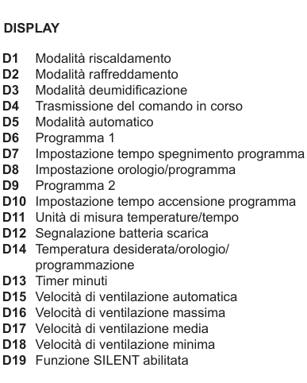
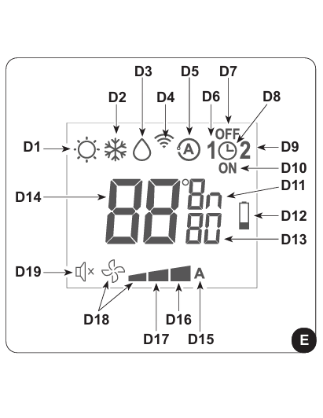
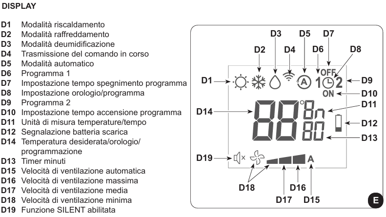

Istruzioni condizionatore
Uso del telecomando
- Maneggiare con cura, evitare di bagnarlo o farlo cadere.
- Non esporre alla luce diretta del sole.
- Rimuovere le batterie in caso di inutilizzo prolungato.
- Tenere il telecomando in una posizione dalla quale il segnale può raggiungere il ricevitore dell'apparecchio (massimo 8 metri).
Descrizione del telecomando (Camera)
Descrizione del telecomando (Salotto)
Descrizione della console di segnalazione e display
- LED Verde: macchina in funzione.
- LED Giallo: programmazione accensione/spegnimento attivata.
- LED Verde: compressore frigorifero acceso.
- LED Rosso: necessità di pulizia del filtro.



Funzioni del climatizzatore
- Accensione/Spegnimento: premere il pulsante B1 per attivare o disattivare il climatizzatore.
- Controllo della velocità del ventilatore: premere il tasto B2 per cambiare la velocità: Bassa > Media > Alta > Automatica.
- Modalità automatico: regola automaticamente la temperatura e la velocità della ventola. Premere il tasto B5 fino a visualizzare il simbolo D5.
- Modalità deumidificazione: deumidifica l'ambiente. premere il tasto B5 fino a visualizzare il simbolo D3 e la ventilazione minima D18.
- Modalità ventilazione: non agisce su temperatura o umidità. Premere il tasto B5 fino a visualizzare il simbolo della ventilazione minima D18.
- Modalità riscaldamento: riscalda l'ambiente. premere il tasto B5 fino a visualizzare il simbolo D1.
- Controllo del flusso d'aria: premere il tasto B4 per attivare/disattivare l’oscillazione continua del deflettore mobile.
- Funzione SILENT: riduce gradualmente la velocità del ventilatore. Premere il tasto B3 per attivare la funzione SILENT.
Consigli per il risparmio energetico
- Chiudere porte e finestre durante l'uso.
- Non ostruire le vie di flusso dell'aria.
Diagnosi e allarmi
- LED A: pulizia del filtro necessaria.
- LED B: alta temperatura batteria.
- LED A + C lampeggianti: funzionamento continuo pompa.
Avvertenze generali
- Non muovere manualmente il flap di uscita aria.
- In caso di perdite d'acqua, spegnere immediatamente e scollegare l'apparecchio.
Se riscontri problemi, contatta l'host, Alessandro.